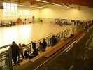
Les organisateurs ont mis du leur, bien qu'une compète en Allemagne ait écarté pas mal de participants ! Pourtant, le gymnase est beau, bien éclairé avec des fenêtres de chaque côté (pas toujours facile pour le photographe, le jaune des murs déteint aussi sur les photos ! ).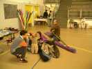
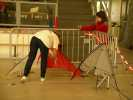
Les compétiteurs terminent leur préparation. Marie-Christine a son matériel, mais Lucie ne concourt pas...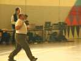
Et c'est parti pour les imposées. Lui marche en avant, ce qui est rare en indoor. Mais il finira sa routine hors d'haleine.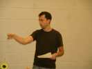
Les concurrents répètent leurs figures avant de passer...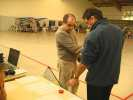
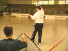
Frank essaie aussi de se rappeler (voire d'apprendre ?) la routine...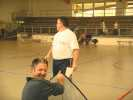
Apparemment, c'est pas encore tout à fait ça ! Hé, Frank c'est un peu tard, surtout que c'est toi qui les a créées, les routines !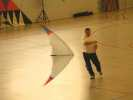
Bon, enfin il va quand même y arriver, en ne se trompant que deux ou trois fois...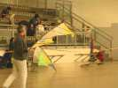
Bon, la matinée, avec les figures imposées, se termine tranquillement, il n'y a pas trop de monde ! Ce sont les quatre lignes, ici un genre de révo-papillon, qui clôturent. Tous les concurrents seront sur le podium...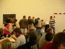
On passe au déjeuner dans la salle à côté. Faut se dépêcher avant que les pizzas (très bonnes, merci Gérard !) ne refroidissent, on prendra les hors-d'oeuvre après. Et la tarte aux pommes sera aussi bien appréciée.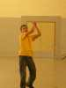
Mais on n'est pas là pour manger. Après le repas, les ballets ! Non, pas les danseuses, comme il y a deux siècles, les cerfs-volants. Et aussi les cerfs-volistes aux chorégraphies diverses...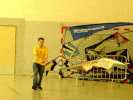
Et des figures qu'on n'ose pas leur demander dans les imposées : décollage en déroulant, fades avec lancers et rattrapages (si réussi...)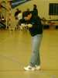
Bien sûr, quand on prend les 2 lignes d'une main, arrive un moment où il faut revenir à deux mains en priant pour que ça ne s'emmêle pas !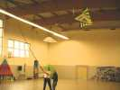
Bien sûr, aussi des démos, comme la valse des malards, présentée par Maxime (l'autre) et Frank. Moi, je ferai ma petite démo tout seul avec le Harfang...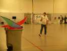
Bruno, comme d'hab, a eu 3 à la première figure en imposées (et 0 aux autres bien sûr...) ! Seul le ballet l'intéresse. Il arrive avec un fourbi incroyable... dans une poubelle roulante !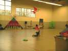
Il commence par des parachutes, puis l'hirondelle monofil, puis le stick rigide, puis le stick souple, puis le pilotable 2 lignes classique !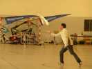
En quatre lignes, Henry se distingue avec son Révo ultra-léger en milar manié de main de maître...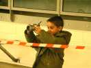
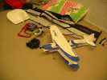
Il y aura aussi un intermède "avions indoor télécommandés" ! Avions très légers en Depron, un plastique aéré genre polystyrène expansé mais plus solide (un peu...), mais aussi hélicoptère. Et ils passeront de la voltige dans la salle. De justesse quand même, et même quelquefois avec accrochages et de la casse. Bon, ça se recolle...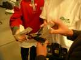
Il y a même un micro bimoteur : la puissance totale commande montée et descente, et en différenciant les 2 moteurs, le lacet donc les virages ! Evidemment, on ne peut faire de la voltige. Mais il a de la place pour se promener dans le gymnase !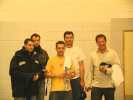
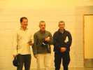
En quatre lignes, les 3 vainqueurs (fallait s'y attendre, ils n'étaient que trois, comme à Moissy, mais pas les mêmes...).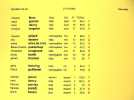
Mais je sens que vous bouillez de connaître le classement : le v'là !